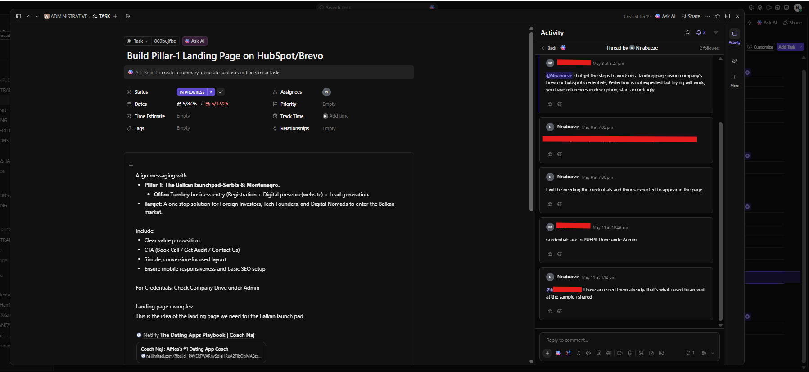
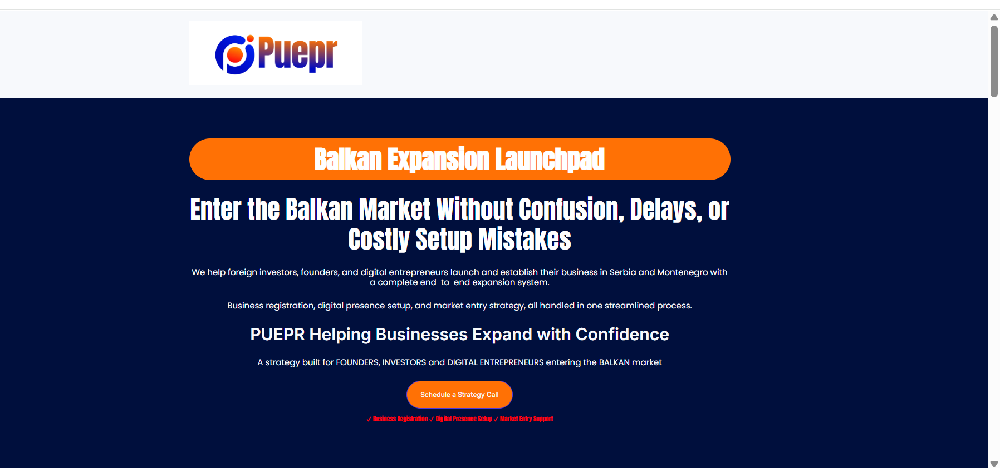
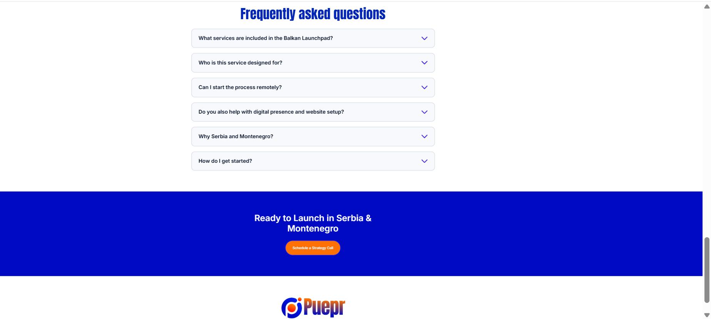

HubSpot CMS • Landing Page Development • Marketing Operations • Digital Experience
As part of the Marketing Operations team at PUEPR, I was assigned to implement a business landing page inside HubSpot CMS to support the company's Balkan Expansion initiative. The objective was to translate the provided marketing strategy into a functional, conversion-focused landing page while maintaining brand consistency and responsive design.
Working from an internal project brief, I structured the page content, arranged marketing sections, implemented calls-to-action, and published the landing page within HubSpot. The completed page served as a digital marketing asset designed to communicate PUEPR's business expansion services to founders, investors, and entrepreneurs entering the Balkan market.
The company required a professional landing page that clearly communicated its Balkan business expansion services while providing visitors with a simple conversion path. The implementation needed to follow the provided messaging framework, remain mobile responsive, and align with the company's branding standards inside the HubSpot CMS environment.

This internal ClickUp task defined the implementation requirements for the Balkan Expansion Landing Page. It outlined the project objectives, messaging framework, business goals, landing page structure, and reference materials required to build the page using HubSpot CMS. The task served as the implementation guide throughout the project.

The completed hero section of the landing page introduces PUEPR's Balkan Expansion Launchpad with a clear value proposition, compelling messaging, and strategically placed call-to-action. The page was designed to communicate the company's services while guiding visitors toward scheduling a consultation.

The lower section of the landing page features a Frequently Asked Questions (FAQ) component designed to address common visitor concerns and reduce barriers to conversion. It concludes with a final call-to-action encouraging visitors to schedule a strategy session, followed by the branded footer to provide a complete and professional user experience.
View Live Landing Page →